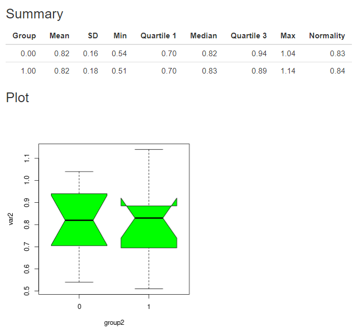
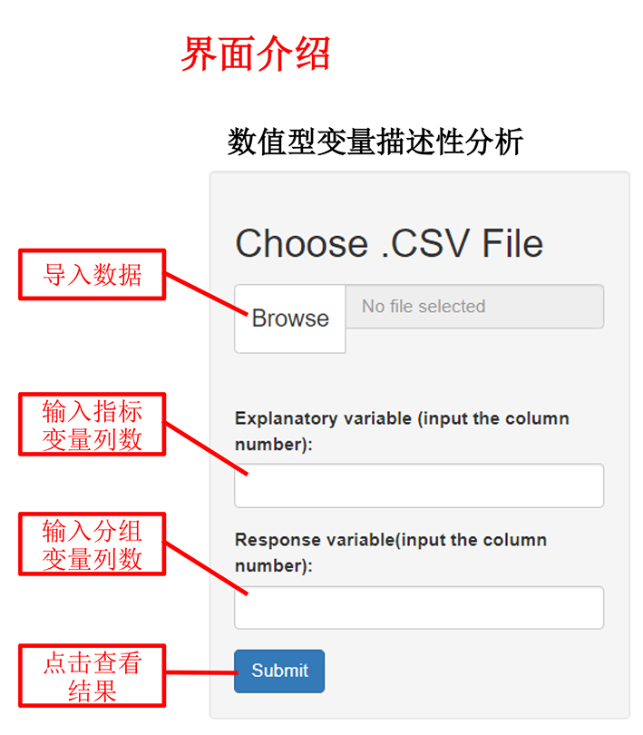
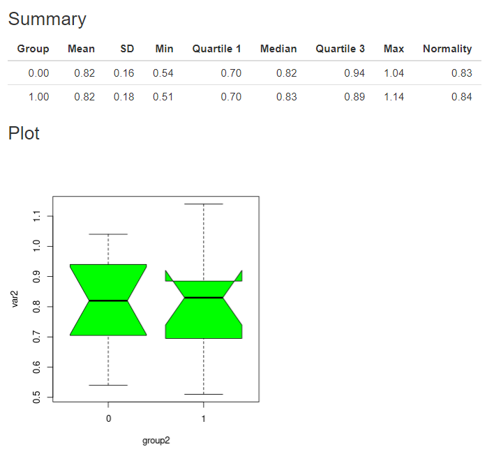

注：
2、数据变量名必须为英文或阿拉伯数字

注：
1、导入数据格式为“.csv”
2、数据变量名必须为英文或阿拉伯数字
输出结果包括均值、标准差、最小值、中位数、正态性检验结果等。
示例如下：

输出结果包括频数、行百分比、列百分比、总百分比，同SAS结果。
示例如下
： 
| 描述性分析 | ||
| 点击此处进行分类变量分析 | ||
|  | |
|
| 一、数据格式 | 一、数据格式 | |
注： 2、数据变量名必须为英文或阿拉伯数字 |
|
|
| 二、输出结果展示 输出结果包括均值、标准差、最小值、中位数、正态性检验结果等。  |
二、输出结果展示 输出结果包括频数、行百分比、列百分比、总百分比，同SAS结果。 ： |
|